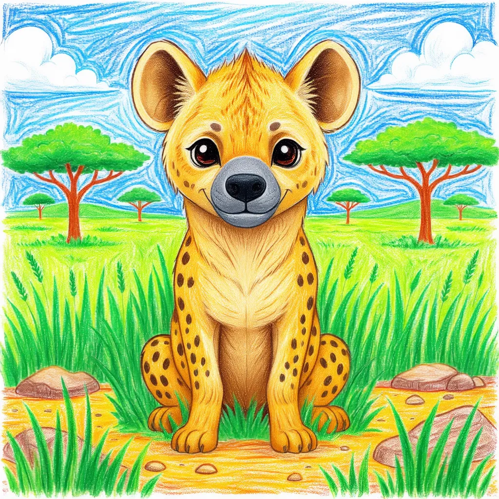

Spotted Hyena
Crocuta crocuta

Key Characteristics
- Hyenas are known for their giggle-like laugh, but this sound usually means they are excited or nervous!
- They are amazing hunters and catch most of their food themselves, they aren't just scavengers.
- They live in large, structured groups called 'clans' led by a strong female.
Peculiar Facts (Fun Facts!)
- A Hyena's jaws are one of the strongest in the animal kingdom—they can crush bones easily!
- Their front legs are longer than their back legs, giving them a sloped back appearance.
- Hyenas are excellent communicators, using different calls, postures, and smells to talk to their clan.